The goal of this project is to solve an everyday problem with an Arduino and the avaliable sensors.
Our group approached this project by first have each group member sketch and present their different ideas.
In the end, we settled on creating a skittle color sorter as our project utilizing a color sensor.
Rough Sketches
For my initial 10 sketches, it is just a process of me trying to get down as many ideas as possible.
One interesting constraint that this project imposes is that the list of sensors and outputs are really basic.
With this point in mind, my initial sketches tried to demonstrate the possible uses with just these basic sensors.
I have approached these sketches with the sensor list on D2L in mind, so they are not complicated in their uses.
Most of my sketches are done by attempting the story board approach that was taught in lecture to demonstrate a scenario.
The following are my 10 Rough Sketches:
Refined Sketches
The refined sketches that I created are based on the color sorter idea.
Initially, our group expected to go with the Amazon Package detection idea as that was an idea a few of our group members liked, and we recieved feedback on it in class.
During the lecture where we presented our ideas, Joseph and Mitch was not able to make it, so the idea of the skittle color sorter that we settled on, that came from Joseph was not presented.
When we met up after the lecture, Joseph presented the idea of the skittle color sorter.
We started to have a discussion about it and it became a debate as to which skittle color is the best.
The entire group quite liked the idea of the skittle color sorter, so we decided to go forwards with this idea.
With this idea in mind, each group member went on to create their refined sketches.
My refined sketches is the first 3 images (sketches 1,2,3), and I attempted to explore the different ways a color sorter could be implemented, and the other potential items we can sort.
Michael's refined sketches (sketches 4,5,6) and Muhannad's refined sketches (sketches 7,8) also explored different sorters, and items that can be sorted.
Mitch's refined sketches (sketches 9,10) focused on other ideas that were not the color sorter.
Joseph sketches are design of our implementation, so his refined sketches could be seen in the implementation seciton.
The following are the 10 Refined Sketches:
Implementation
Design and Sketches of Implementation
The main design of the final implementation of the skittle sorter could be seen through this sketch:
It consist of a driver/shaft where the skittles are queued up for sorting.
The driver/shaft holds the skittles in place for the first servo motor to move them in place to the color sensor.
The color sensor identifies which color the skittle is and moves the second servo motor with the ramp attached so that it is in the correct position.
With the correct timing set in the Arduino, after the color is determined, the first servo motor moves the skittle away from the color sensor,
and drops it onto the ramp so that the skittle could fall into the correct cup.
The first servo motor than moves back into its original position to fetch the next skittle that is being queued up in the driver/shaft.
All of the communication between these individual parts are connected through the arduino,
and the implementation logic/detail of it could be found in the source code section that links to our github page.
Here is an sketch of how everything is wired up in our project:
Actual Images from Implementation
The first servo motor that is directly below the driver/shaft is responsible for moving the skittles to the color sensor, and dropping it onto the ramp:
The second servo motor is attached to the ramp, and aligns the ramp so that the skittle drops into the correct place:
The final demo could be viewed in video section, and here is the image of the finished product:
Source Code
The source code for our project can be found at the following link to GitHub
Video
This is a video demonstrating the skittle sorter in action:
Group Members
Alexander Lam
Joseph Gorospe
Michael Verwaayen
Mitchell Rudy
Muhannad Nouri
CPSC 581 Project 1: Screen Unlock
Context
The goal of this project is to design a unlock mechanism that is an alternative to the classical "Slide to Unlock" found on the IPhone.
There will be two main parts to this project as a unlock mechanism based on both touch and sensors is needed.
For our group, we have settled on using a trivia/combo for the touch unlock and the accelerometer for the sensor unlock.
Rough Sketches
For my initial 10 sketches, it is just a process of me trying to get down as many ideas as possible.
I ended up with 3 sketches that were sensor based, and 7 that were touch based.
In this initial phase, my sketches just focused on the different way it is possible to provide an unlock mechanism.
There is no main focus other than exploring the different ways it is possible to have a lock screen mechanism.
The following are my 10 Rough Sketches. For all the sketches of the group, visit the Gallery Page:
Touch Based Sketches
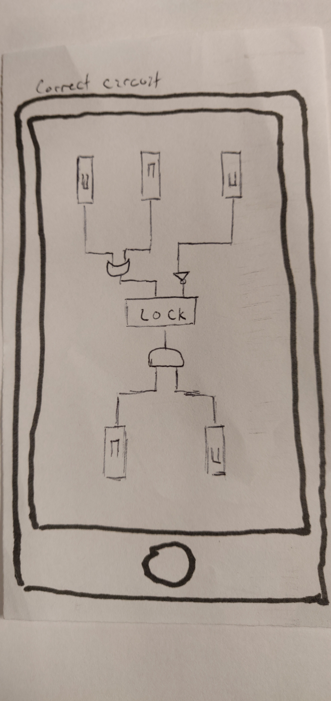
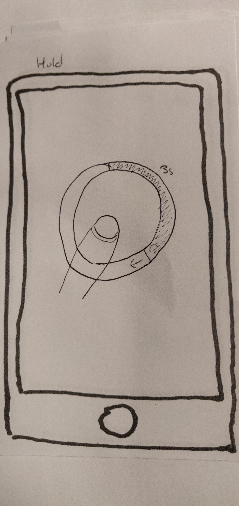
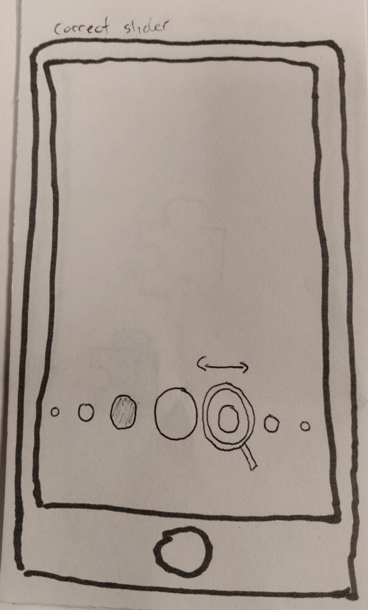
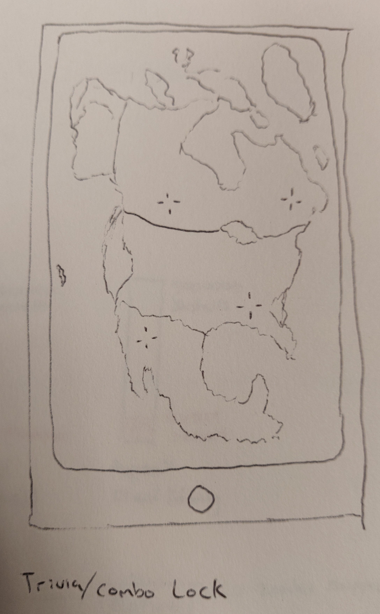
Sensor Based Sketches
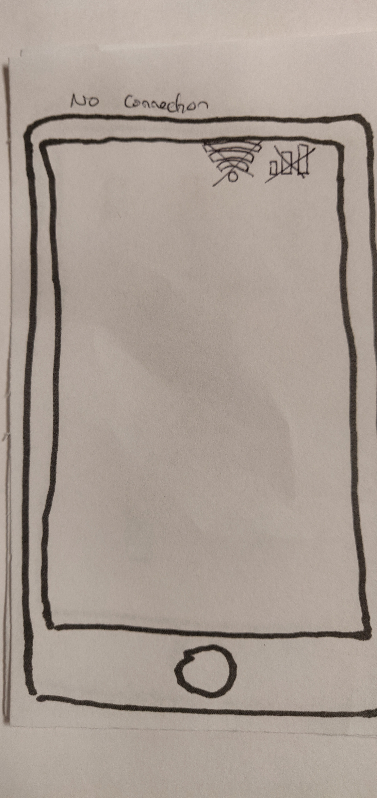
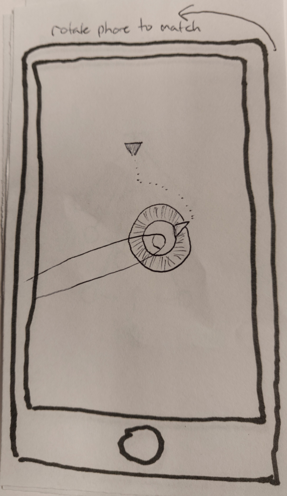
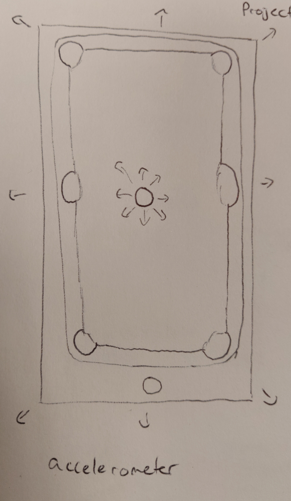
Refined Sketches
After some further discussion within the group, we settled on the idea of using an accelerometer for the sensor based application and a combo/trivia lock for the touch based application.
It was also at this point that we each member of our group presented the ideas they liked the most to the class.
Out of all the ideas, the advertisement based lock screen and door key unlock seems to have recieved the most attention in the feedback we were given.
It was basically settled after recieving the feedback that our team would proceed with these two ideas as the key could be implemented with an accelerometer,
and a trivia/combination element could be added to the advertisements as we agreed upon earlier in the design proccess.
With this direction in mind, the following is a collage of the 10 refined sketches we decided on as a group. For all of the refined sketches done, visit the Gallery Page:
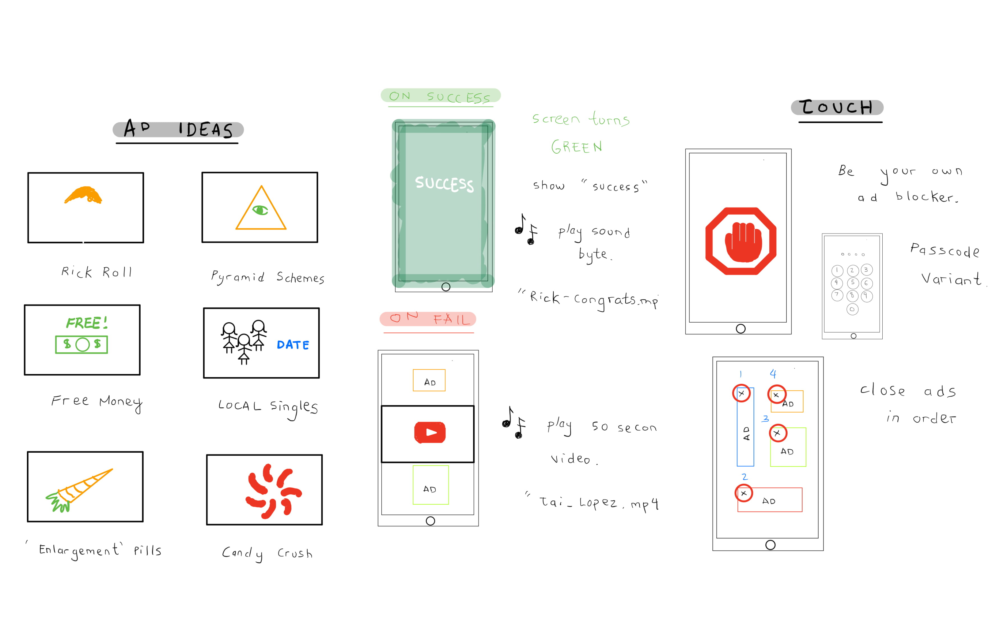
Implementation
Touch Based Unlock:
The touch based advertisement lockscreen was implemented in Android Studio.
It consisted of a single screen where several different advertisements are displayed.
The user would have to tap on the advertisements to close them, and in the case of our lockscreen,
they would have to be closed in the correct order.
If they are not closed in the correct order,
the user would be presented with an additional video advertisement which they would have to watch through.
After the video is done playing, they will be brought back to the same screen where they would have to close the advertisements again.
If they are closed int he correct order, the user would be presented with a success message, and the phone screen would unlock.
The correct order that the advertisements needs to be closed in is as follows:
Reebok
Copy/Paste
Lose Weight
Game of War
Windows Prompt
Bud Light
Local Singles
To see the lock screen in action, check out this video (note: there is audio):
Sensor Based Unlock:
The sensor based key lockscreen was implemented using React Native Expo.
The user is presented with 7 different keys that can be used to unlock the phone.
By swiping left and right, the user would be able to select the different keys that are avaliable to them.
Once the user has decided on the key they want to use, the would have to perform a twist motion counter clock-wise to unlock the phone.
This is assuming that the phone was held facing upwards, and is twisted counter clock-wise till the phone is facing downwards.
While the twist motion is being performed, the phone will emit a sound to let the user know that it is detecting the key being used to unlock the phone.
All of the keys emit the same sound when turned, except the Pokemon Key Card which has a different sound clip.
If the incorrect key is chosen, the user would be presented with a red background, and a error tone.
If the correct key is chosen, the user would be presented with a green background, and a success tone.
The lockscreen would then wait a few seconds, and the phone would unlock.
There is a total of 7 different keys, but the only key that works is the Zelda key, which is the last one.
To see the lock screen in action, check out this video (note: there is audio):
Source Code
The source code for our project can be found at the following link to GitHub
Demo/Deployment
Please remember that both the touch and sensor based lockscreen does have sound, so for the full experince, please have the volume enabled.
Touch Based Unlock:
The source code for this is located at the Github link posted above in the MyApplication folder.
Follow these instructions to run it:
To run the application, download Android Studio from the official website
Choose Nexus 5X as the emulator device running Android 9, API 28
Alternatively, connect your Android phone to the computer and select it as the target device
Sensor Based Unlock:
The source code for this is located at the Github link posted above in the SensorApplication folder.
However, since the application was built using React Native Expo, it is advised that you do not build the application yourself
as it requires having both Node.js, Git command line, and the correct React Native and Expo libraries installed.
The easiest way to run the application would be the following:
Install the application directly onto your device with this APK file
Alternatively, download the Expo App from the Google Play Store and scan this QR Code:
Group Members
Alexander Lam
Joseph Gorospe
Michael Verwaayen
Mitchell Rudy
Muhannad Nouri
CPSC 581 Project 0: The Donald Trump Button
Context
After forming our groups, we talked about the potential characters we can use for our button. At the end, we decided to do our button on Donald Trump.
Initially, during the first meeting, there were many ideas thrown around such as Batman, Superman, Trump, Gordon Ramsay, or even on one of our group members.
After the initial meeting, we did not manage to settle on a final character, so we just decided to each do some sketching for potential button ideas.
Rough Sketches
Since we did not decide on a final character yet, I decided to focus on coming up with different forms a button could take.
I needed some sort of symbol to start sketching, so I picked Batman as a starting point.
All of my rough sketch focused on the different things a button can do so the sketches were used to manily demonstrate functionality.
If in case the character were to be changed in the future, I can still apply the same functionality in these rough sketches to that character.
Here are 2 of my 10 rough sketches. For all of the sketchs, visit the Gallery Page:
Refined Sketches
After the second meeting, we decided that the character of our button will be Donald Trump. With that in mind, we started to do our refined sketches.
The first thing that came to my mind with Trump is the wall and his famous quotes.
My two refined sketches reflect this as I imagine our button doing something with different type of walls, and also having him say his quotes through audio.
Here are the 2 refined sketches that I have done for the group. For All of the refined sketches, visit the Gallery Page:
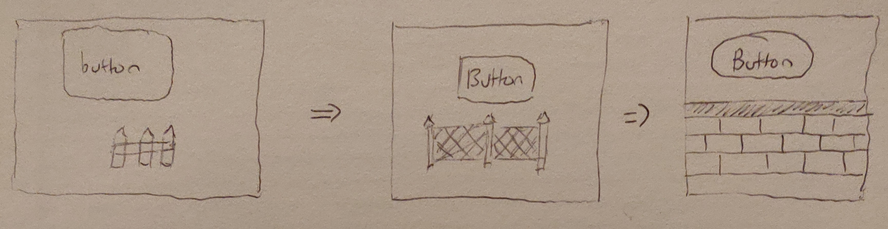
Implementation
Our group decided to use HTML, CSS, and Javascript to implement our button.
We settled with having 5 different interactions which included default, hover, idle, click and rightclick.
All of these interactions will come from the different ideas that we got from our sketches.
After recieving feedback from the class, we decided to modify our plans and add in the ideas of tweets as that is an iconic part of Trumps character.
Most of our interactions have sound built in.
Default
When Trump is not interacted with, he is in his default bored state:
Hover
When you hover over Trump, he is happy for attention:
Idle
When you do not move the mouse at all, Trump will slowly morph into Cheeto Trump:
Click
For our click, we decided to use the idea that we recieved from class, and that is trump sending out tweets.
Whenever you click on him, he will get more and more mad as he turns more red and send out tweets.
When he reaches his max state, he will start saying one of his quotes.
Right Click
For our right click, we decided to have a wall be built over him. In this state, he cannot be interacted with:
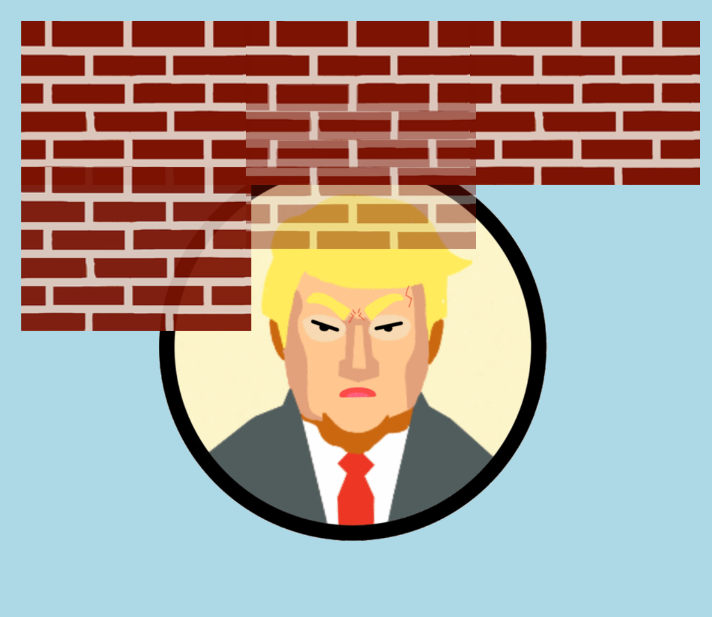
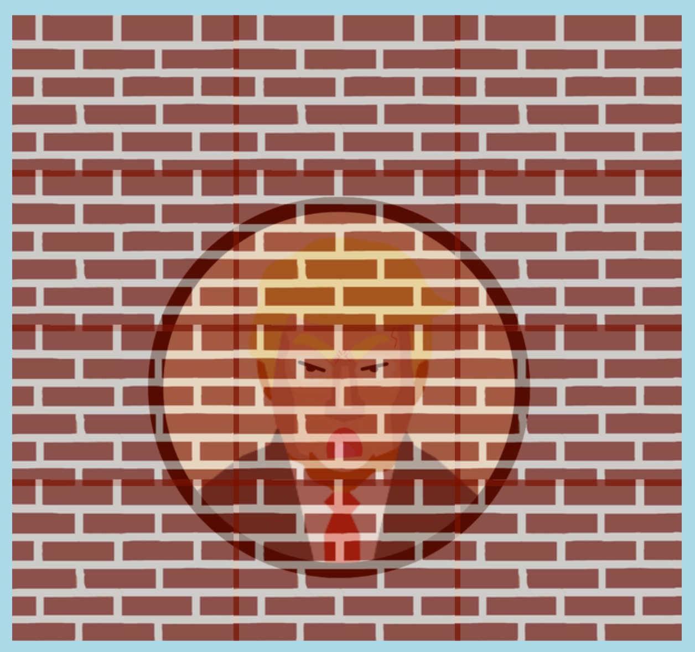
Source Code
The source code for our project can be found at the following link to GitHub
Demo/Deployment
Our button is hosted and could be played with at this link
Please remember that our button does has sound, so for the full experince, please have sound on.
Video
This is a video demonstrating the button:
Group Members
Alexander Lam
Joseph Gorospe
Michael Verwaayen
Mitchell Rudy
Muhannad Nouri
SENG 513 Web Based Systems: Project
This is a placeholder for an upcoming web based system project.

.jpg)
.jpg)
.jpg)
.jpg)
.jpg)
.jpg)
.jpg)
.jpg)
.jpg)
.jpg)
.jpg)
.jpg)
.jpg)
.jpg)
.jpg)
.jpg)
.JPG)
.JPG)
.jpg)
.jpg)
.jpg)
.jpg)
.jpg)


 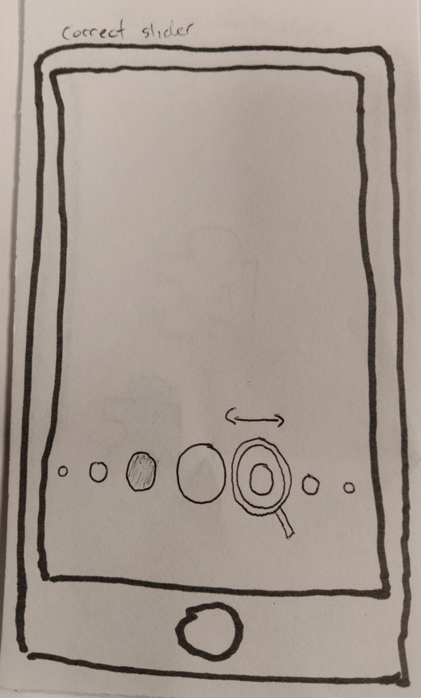
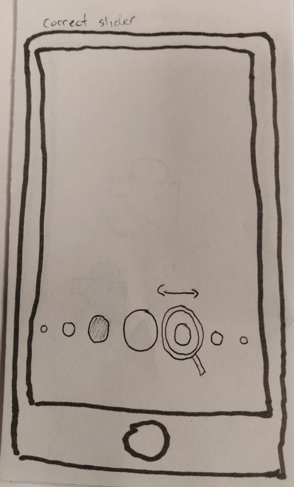
 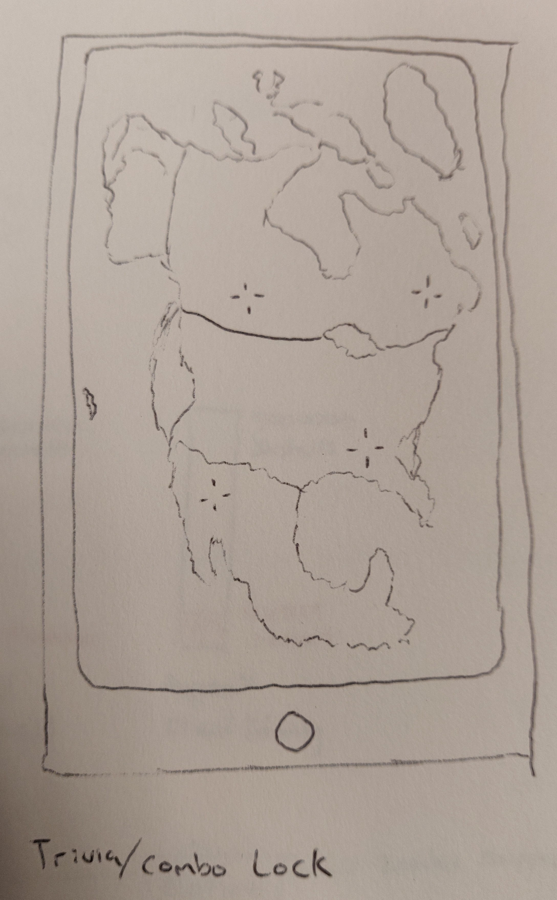
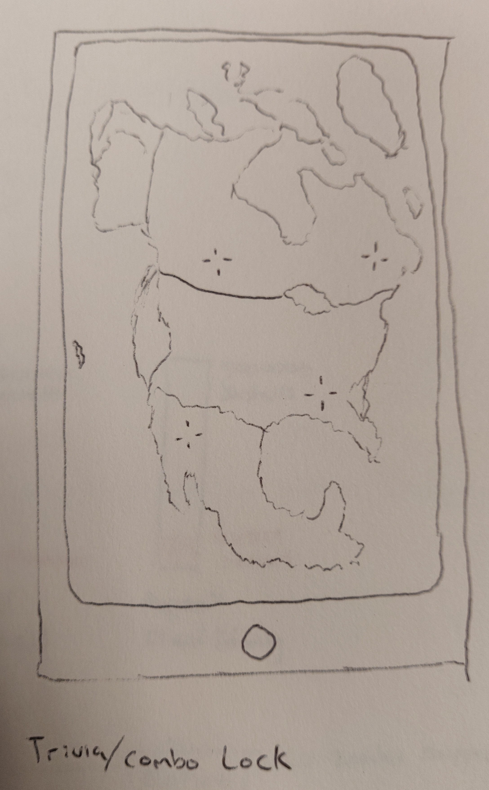
 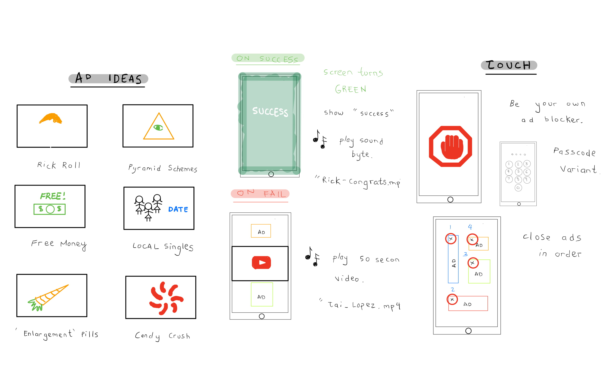
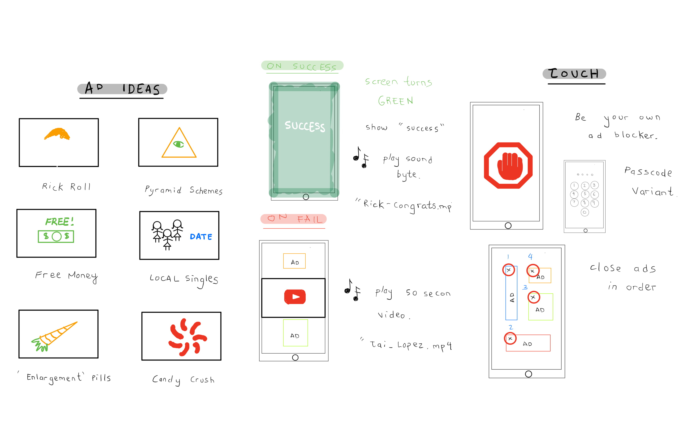


 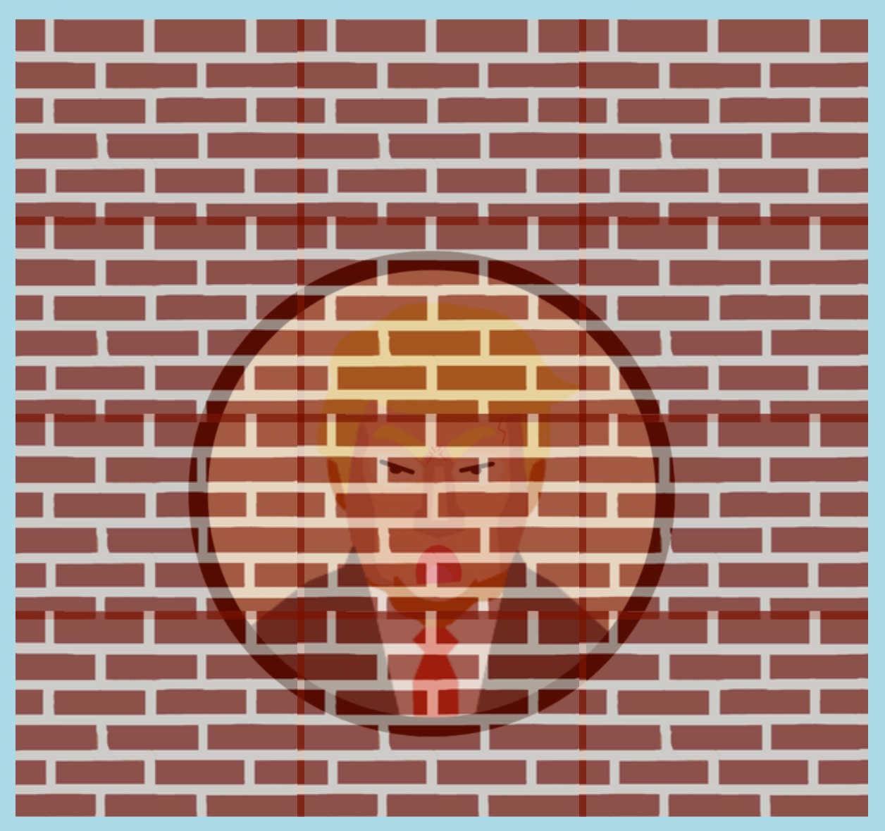
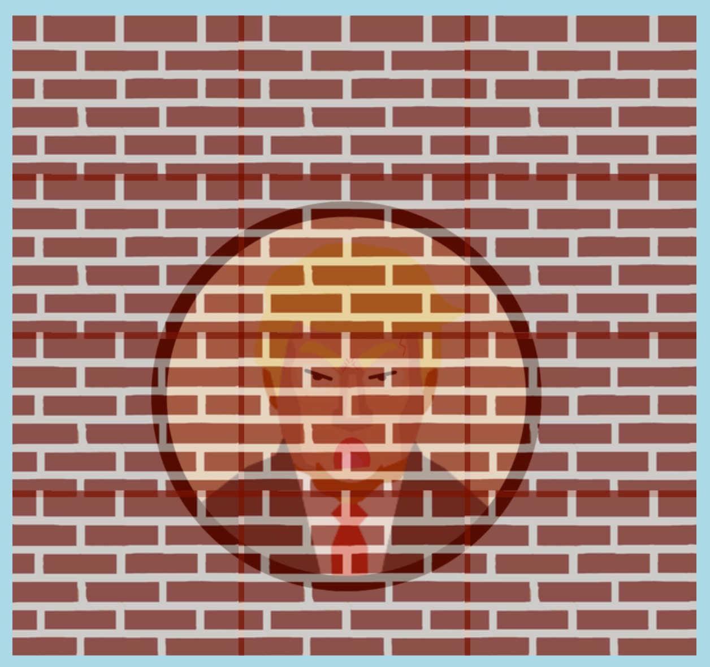